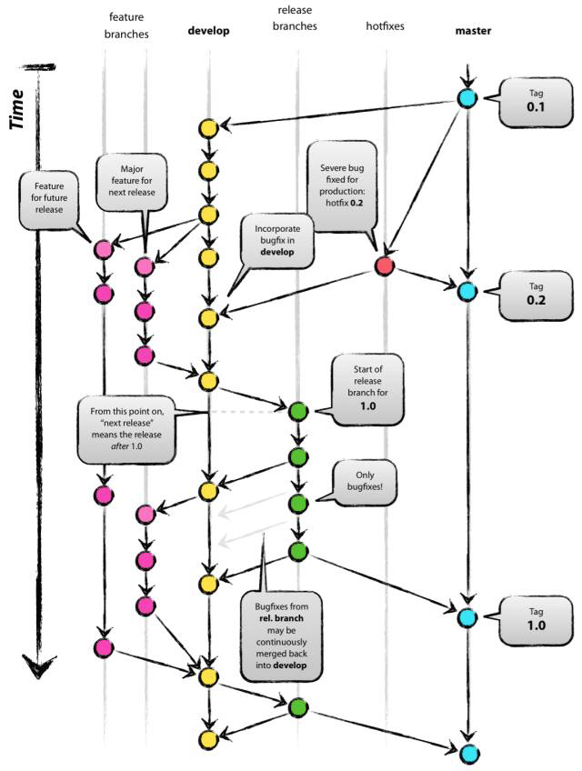
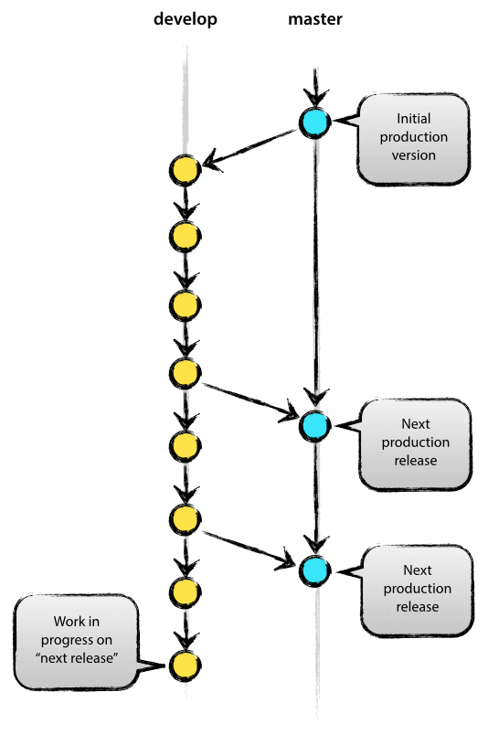
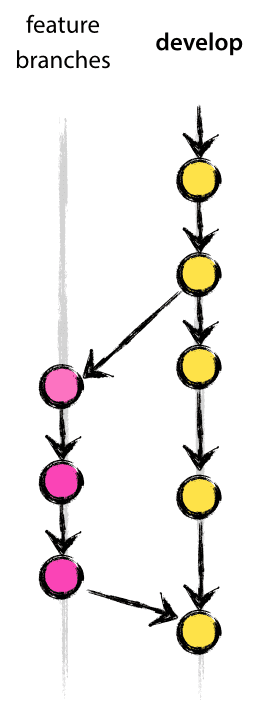
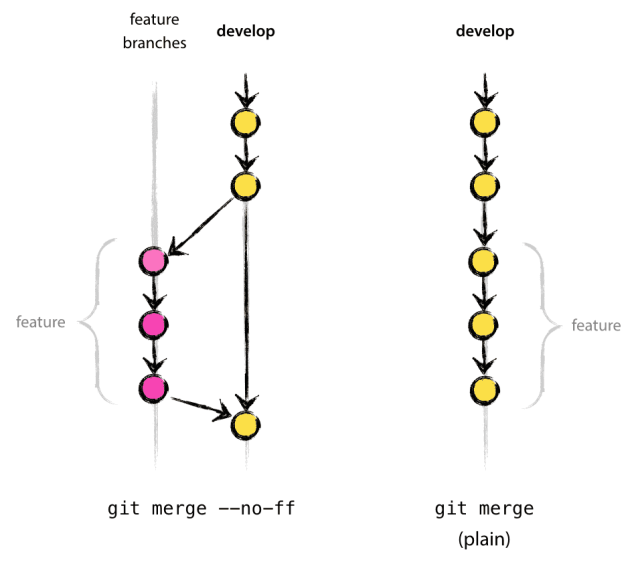
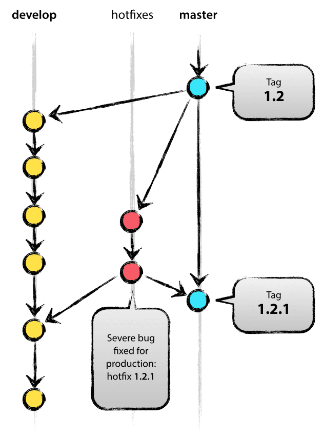

1.引言
git 和 svn 的一个显著区别就是提供更丰富的分支特性，我们今天就要说一下如何管理这些分支。关于 git 的分支管理，Vincent Driessen 有一篇文章说的非常好，地址在参考[1]。我这里主要就是参考他的文章。
2. 总览
git 的分支整体预览图如下。

从上图可以看到主要包含下面几个分支：
master: 主分支，主要用来版本发布。
develop：日常开发分支，该分支正常保存了开发的最新代码。
feature：具体的功能开发分支，只与 develop 分支交互。
release：release 分支可以认为是 master 分支的未测试版。比如说某一期的功能全部开发完成，那么就将 develop 分支合并到 release 分支，测试没有问题并且到了发布日期就合并到 master 分支，进行发布。
hotfix：线上 bug 修复分支。
除此之后还可以有 fast-track 等分支。
3. 主分支
主分支包括 master 分支和 develop 分支。master 分支用来发布，HEAD 就是当前线上的运行代码。develop 分支就是我们的日常开发。使用这两个分支就具有了最简单的开发模式：develop 分支用来开发功能，开发完成并且测试没有问题则将 develop 分支的代码合并到 master 分支并发布。

这引入了几个问题：
develop 分支只有发布完了才能进行下一个版本开发，开发会比较缓慢。
线上代码出现 bug 如何进行 bug 修复。
带着这两个问题往下看。
4. 辅助分支
主要介绍的辅助分支如下：
feature 分支
release 分支
hotfix 分支
通过这些分支，我们可以做到：团队成员之间并行开发，feature track 更加容易，开发和发布并行以及线上问题修复。
4.1 Feature 分支
feature 分支用来开发具体的功能，一般 fork 自 develop 分支，最终可能会合并到 develop 分支。比如我们要在下一个版本增加功能1、功能2、功能3。那么我们就可以起三个feature 分支：feature1，feature2，feature3。（feature 分支命名最好能够自解释，这并不是一种好的命名。）随着我们开发，功能1和功能2都被完成了，而功能3因为某些原因完成不了，那么最终 feature1 和 feature2 分支将被合并到 develop 分支，而 feature3 分支将被干掉。

我们来看几个相关的命令。
从 develop 分支建一个 feature 分支，并切换到 feature 分支
$ git checkout -b myfeature develop
Switched to a new branch “myfeature”
合并feature 分支到 develop
$ git checkout develop
Switched to branch ‘develop’
$ git merge –no-ff myfeature
Updating ea1b82a..05e9557
(Summary of changes)
$ git branch -d myfeature
Deleted branch myfeature
$ git push origin develop
上面我们 merge 分支的时候使用了参数 –no-ff，ff 是fast-forward 的意思，–no-ff就是禁用fast-forward。关于这两种模式的区别如下图。（可以使用 sourceTree 或者命令git log –graph查看。）

看了上面的图，那么使用非fast-forward模式来 merge 的好处就不言而喻了：我们知道哪些 commit 是某些 feature 相关的。虽然 git merge 的时候会自动判断是否使用fast-farward模式，但是有时候为了更明确，我们还是要加参数–no-ff或者–ff。
4.2 Release 分支
release 分支在我看来是 pre-master。release 分支从 develop 分支 fork 出来，最终会合并到 develop 分支和 master 分支。合并到 master 分支上就是可以发布的代码了。有人可能会问那为什么合并回 develop 分支呢？很简单，有了 release 分支，那么相关的代码修复就只会在 release 分支上改动了，最后必然要合并到 develop 分支。下面细说。
我们最初所有的开发工作都在 develop 分支上，当我们这一期的功能开发完毕的时候，我们基于 develop 分支开一个新的 release 分支。这个时候我们就可以对 release 分支做统一的测试了，另外做一些发布准备工作：比如版本号之类的。
如果测试工作或者发布准备工作和具体的开发工作由不同人来做，比如国内的 RD 和 QA，这个 RD 就可以继续基于 develop 分支继续开发了。再或者说公司对于发布有严格的时间控制，开发工作提前并且完美的完成了，这个时候我们就可以在 develop 分支上继续我们下一期的开发了。同时如果测试有问题的话，我们将直接在 release 分支上修改，然后将修改合并到 develop 分支上。
待所有的测试和准备工作做完之后，我们就可以将 release 分支合并到 master 分支上，并进行发布了。
一些相关命令如下。
新建 release 分支
$ git checkout -b release-1.2 develop
Switched to a new branch “release-1.2”
$ ./bump-version.sh 1.2
File modified successfully, version bumped to 1.2.
$ git commit -a -m “Bumped version number to 1.2”
[release-1.2 74d9424] Bumped version number to 1.2
1 files changed, 1 insertions(+), 1 deletions(-)
release 分支合并到 master 分支
$ git checkout master
Switched to branch ‘master’
$ git merge –no-ff release-1.2
Merge made by recursive.
(Summary of changes)
$ git tag -a 1.2
release 分支合并到 develop 分支
$ git checkout develop
Switched to branch ‘develop’
$ git merge –no-ff release-1.2
Merge made by recursive.
(Summary of changes)
最后，删除 release 分支
$ git branch -d release-1.2
Deleted branch release-1.2 (was ff452fe).
4.3 Hotfix 分支
顾名思义，hotfix 分支用来修复线上 bug。当线上代码出现 bug 时，我们基于 master 分支开一个 hotfix 分支，修复 bug 之后再将 hotfix 分支合并到 master 分支并进行发布，同时 develop 分支作为最新最全的代码分支，hotfix 分支也需要合并到 develop 分支上去。仔细想一想，其实 hotfix 分支和 release 分支功能类似。hotfix 的好处是不打断 develop 分支正常进行，同时对于现实代码的修复貌似也没有更好的方法了（总不能直接修改 master 代码吧:D）。

一些相关的命令。
新建 hotfix 分支
$ git checkout -b hotfix-1.2.1 master
Switched to a new branch “hotfix-1.2.1”
$ ./bump-version.sh 1.2.1
Files modified successfully, version bumped to 1.2.1.
$ git commit -a -m “Bumped version number to 1.2.1”
[hotfix-1.2.1 41e61bb] Bumped version number to 1.2.1
1 files changed, 1 insertions(+), 1 deletions(-)
Fix bug
$ git commit -m “Fixed severe production problem”
[hotfix-1.2.1 abbe5d6] Fixed severe production problem
5 files changed, 32 insertions(+), 17 deletions(-)
buf fix 之后，hotfix 合并到 master
$ git checkout master
Switched to branch ‘master’
$ git merge –no-ff hotfix-1.2.1
Merge made by recursive.
(Summary of changes)
$ git tag -a 1.2.1
hotfix 合并到 develop 分支
$ git checkout develop
Switched to branch ‘develop’
$ git merge –no-ff hotfix-1.2.1
Merge made by recursive.
(Summary of changes)
删除 hotfix 分支
$ git branch -d hotfix-1.2.1
Deleted branch hotfix-1.2.1 (was abbe5d6).